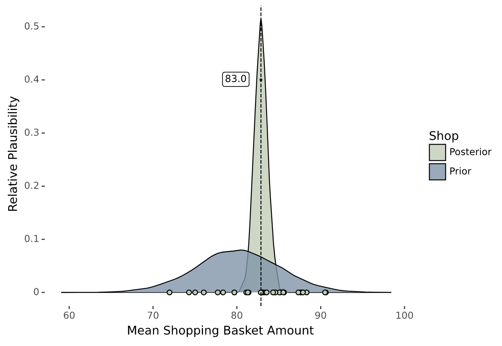
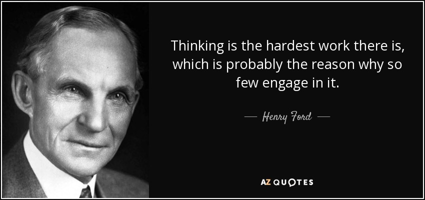

You have a business and you struggle to quantify the value of your marketing efforts. Some examples include:
Even if you are an expert and have a thorough understanding of the factors driving your business, you may lack a systematic way to incorporate your knowledge and make sensible predictions. It can be frustrating to have disparate sources of information without a unified framework to combine them and objectively answer your business questions. It's not surprising that businesses find it increasingly difficult to extract insights and keep up in a fast-changing market.
Traditional statistical methods often struggle to handle the nuances and uncertainties associated with real-world data. Furthermore, information often comes from different sources with varying levels of granularity and reliability. Machine learning can be used to solve problems once you have enough data with relevant inputs. Deep learning, in particular, is adept at handling some of the so-called "ill-posed" problems encountered in computer vision and natural language processing. Somehow, these computational powerhouses do not seem to be applicable to your problem, despite their availability to more than just experts these days.
Enter Bayesian data science, a powerful and flexible approach to data analysis and modeling. It allows you to incorporate your knowledge and assumptions about a specific problem and provides a mechanism to update your knowledge as new information arrives. This blog explores the benefits of Bayesian data science from a business perspective and explains why it's worth considering for your organisation. We'll also discuss how it differs from the typical machine-learning workflow.
You may have heard of Bayes' formula. It is a mathematical equation that describes the optimal method for updating your existing knowledge when new information is obtained from data. The equation consists of three basic components, each with specific terminology associated with it. It is important to become familiar with this terminology because you will encounter it in most traditional and modern texts. Let's go through the basic idea using an example.
If you own a shop, you may want to determine the average amount that customers spend per basket. Your shop is well-established, and you already have a good idea of what the average basket spend is, although you have not made any calculations yet. That is, you have some prior knowledge about the problem. This knowledge helps you evaluate the relative plausibility of different hypotheses, such as different values for average basket spend, without necessarily relying on any data. You know the average spend is about 80 Glimmerbits (our currency for this story), and you don’t expect it to be much less than 70 Glimmerbits or any more than 90 Glimmerbits.
You decide to obtain some data by examining the basket sizes for the next day. (Let's ignore complexities related to time-of-day effects). This way you obtained 30 samples in a day.
Bayes’ formula can be used to obtain the so-called posterior, which is an updated representation of your prior knowledge. It is a blend of your prior knowledge and the information you learned from the data through the likelihood (the probability of observing the data, conditional on your prior knowledge or beliefs). The more data you have, the more the posterior leans towards what the data tells you and flushes out the prior knowledge. If you have extremely limited data, your prior knowledge takes the driver's seat until you obtain new information. In a future iteration, your posterior can become your new prior. However, you do not need not understand how this works but appreciate the notion of information updating that can be done in a systematic way.
Let’s look at the result.

There is a high level of uncertainty in our estimates for the average basket size prior to obtaining any data. However, our estimate becomes more accurate after obtaining 30 data points. The dots at the bottom are the observed basket amounts.
At this point, we might need to specify what we mean by "distribution". It refers to the relative number of ways in which different outcomes can occur. So the grey-blue distribution captures our specification of what we believe plausible values for the average basket size can be, with our highest expectation around 80 Glimmerbits. The values of 70 and 90 are highly unlikely, and more extreme values are even less probable. After incorporating the information from Bayes’ formula, the posterior rapidly converged to the true mean of 82, with much less uncertainty than before.
If you didn't understand everything on the first read, don't become discouraged. These concepts are challenging, but they are necessary to appreciate the power of Bayesian modeling and understand its full potential in your business. We will build on this example to demonstrate how Bayesian modeling can excel in problems surrounded by more significant uncertainty.
Machine learning models are often referred to as "black box models". These models learn a complex function from data to represent the information contained in it. Since this function is normally beyond human comprehension, it is difficult to interrogate such a model for anything other than its original purpose. You do not have a way to ask different questions about the data and use the same model to arrive at an answer.
In a typical machine learning workflow, you fit various models, perform parameter optimizations, and use standard procedures to select your best model, from which you can make predictions. However, in this process, you are not too concerned about how the data was generated. These models "free" you from making and encoding your assumptions upfront, but it comes at a cost. Data scientists often make the mistake of attempting to fit machine learning models as soon as they obtain data.

H. Ford. AZ Quotes. Retrieved April, 2023, from https://www.azquotes.com/quote/99162.
In Bayesian modeling, you must constantly consider the process that generates the data. Your Bayesian model should closely reflect this process. Although this may seem daunting, there are statistical principles and techniques that can be used to specify widely different and complex data-generating processes. Even if you must make simplifying assumptions, you are bound to think about them before encoding them in the model.
The upfront effort required for Bayesian modeling can sometimes be a barrier to even attempting it and this is where most data scientists falter. However, the belief that a faster black box approach will give superior results should be dispelled. There are some basic principles that can be used to specify a scientific model from which you can derive the Bayesian statistical model. However, there is nothing automatic about it. Despite having modern tools to fit complex models, it is important to think about the problem and formulate it clearly. This requires serious consideration of the question you are trying to answer and the knowledge you have about the problem.
It is relatively simple to run code to fit a model to data and to obtain results relatively quickly, so it is unsurprising that most data scientists are reluctant to put in the hard work of thinking about the problem beforehand. In Bayesian modeling, you should think before you fit. However, after the initial effort of creating a model, you gain access to a plethora of tools to help you move from uncertainty to insight.
In addition to forcing us to approach our research questions differently, it provides a framework to help us deal more effectively with our biases and incorporate even vague knowledge that we sometimes need to elicit from our brains.
As the British statistician George Box once said, "All models are wrong, but some are useful." Bayesian data science can certainly assist you in finding a useful model, but it can be quite complicated at first. This is where experts in Bayesian modeling can be extremely helpful. Companies like PyMC Labs provide consulting services to assist with this process.
By incorporating prior knowledge and uncertainty into models, Bayesian methods can produce more accurate predictions and help businesses make better decisions. This is especially useful in situations where data is scarce or incomplete. This is a common scenario in many business problems, which machine learning models often fail to address.
It's hardly ever a good idea to make a list of the advantages of using Bayesian data science, because you risk leaving out so many examples. However, I will take the liberty of mentioning just a few. Bayesian data science provides a systematic and consistent framework that enables:
By leveraging these advantages, businesses can improve decision-making and risk management leading to better overall outcomes, improved profitability and increased competitive advantage.
Bayesian models are employed in various domains, such as demand forecasting, fraud detection, personalised marketing with recommender systems, churn prediction, and risk management in a wide range of business contexts.
Insurance companies use Bayesian methods to model the probability of different events, such as natural disasters or accidents and then determine the policy price accordingly. This approach helps them manage risk exposure and ensure adequate preparedness for potential losses.
In the healthcare industry, Bayesian methods can be utilised to design and analyse clinical trials, incorporating prior knowledge about aspects of the study design. Researchers can create more efficient and effective trials by incorporating information on different treatments and the prevalence of certain diseases. This accelerates the development of new drugs and therapies, ultimately improving patient outcomes.
In the field of marketing, Bayesian models can be used to estimate the effectiveness of marketing campaigns. Specifically, data on past customer behaviour can be collected and combined with a company's prior knowledge about customer behaviour to update its beliefs on the probability of a customer making a purchase after seeing a particular advertisement. This information can then be used to make decisions on how to allocate a company's marketing budget.
PyMC Labs has a strong track record of success in the marketing space, having worked with some of the world's leading brands. They have even developed a product specifically designed to optimize your marketing strategy.
Clearly, Bayesian models have a wide range of applications across various domains, providing a flexible, but scientifically rigorous framework to tackle difficult problems.
Despite living in a world of "big data," where machine learning, particularly deep neural networks, is becoming increasingly accurate at making predictions as sample size increases, we often encounter a neglected subgroup of "small data" problems in business. Many business problems are hindered by a lack of data. Additionally, the scientific fields of medicine, anthropology, psychology, and others are typically constrained in the data they can collect due to ethical, financial, or practical reasons. For such problems, we cannot simply rely on mountains of data and apply machine learning algorithms. Instead, we must systematically incorporate domain knowledge into our models.
Bayesian modeling has the advantage of requiring little data to learn and reducing uncertainty about a particular outcome. Once you specify your model and incorporate all of your prior knowledge, you can generate different outcomes from the model and evaluate its validity. In a generative model, data is not even needed to begin with! Generated model outcomes can be tested against industry or domain expert knowledge, and adjustments can be made to produce more plausible outcomes. This is known as prior predictive modeling, an important step in the Bayesian workflow. As data is obtained, regardless of its size, the model can be updated to obtain a new posterior probability distribution.
Bayesian models have a powerful feature called hierarchical modeling, which allows information to be shared among related data points. This sharing of information creates a form of memory within the model, enabling it to borrow knowledge from different groups. While it may come with conceptual and computational challenges, harnessing the hierarchical model greatly enhances the benefits of Bayesian analysis.
Hierarchical models possess a memory-like ability, generating expectations and facilitating learning when there are discrepancies between expectations and observations. This property allows them to adapt and improve their understanding [1].
The hierarchical structure of a problem arises from various factors. For instance, market conditions can influence all marketing channels similarly, causing them to perform better or worse together. However, it is essential to capture the individual variations of each channel, considering factors such as effectiveness and seasonal patterns. Bayesian models excel in handling diverse levels of information, making them ideal for marketing attribution in business [2].
Although the theory of Bayesian analysis has been around for centuries, its practical application in business was limited by computational complexity. Fortunately, advancements in algorithms and the emergence of powerful open source frameworks with user-friendly interfaces have simplified the process of specifying and building these models, while managing computational complexity behind the scenes. Hardware advancements have also significantly accelerated processing speeds. Today, we can fit complex models in a fraction of the time it would have taken just a few years ago. Even on a regular PC, we can handle models of complexity that previously required specialised hardware and expertise.
While it can be overwhelming to stay abreast of the latest innovations, it is crucial to acknowledge the remarkable opportunities they present. The rise of open-source technology has democratised access to powerful tools, benefiting scientific communities and the general public alike. This accessibility has contributed to enhanced productivity, optimised processes, and more precise predictions. By embracing these technologies, businesses can experience noticeable improvements within a very short timeframe.
Bayesian modeling provides a scientifically rigorous framework to help humans think about their problems and learn from data. By incorporating prior knowledge and uncertainty into models, Bayesian methods can produce more accurate predictions and help businesses make better decisions, especially when data is scarce or incomplete. Bayesian modeling requires significant upfront thinking, but the rewards are worth the effort. With the latest advances in open-source technology, it is easier than ever to leverage the benefits of Bayesian data science and by adopting these methods, businesses can stay ahead of the competition and achieve better outcomes overall.
[1] Mcelreath, R. (2016). Statistical rethinking: a Bayesian course with examples in R and Stan. Boca Raton: Crc Press/Taylor & Francis Group.
[2] Solving real-world business problems with Bayesian modeling. (31st October 2022). PyMC Labs. Available at: https://www.pymc-labs.io/blog-posts/Thomas_PyData_London/ (Accessed: April 15, 2023).
If you are interested in seeing what we at PyMC Labs can do for you, then please email info@pymc-labs.com. We work with companies at a variety of scales and with varying levels of existing modeling capacity. We also run corporate workshop training events and can provide sessions ranging from introduction to Bayes to more advanced topics.